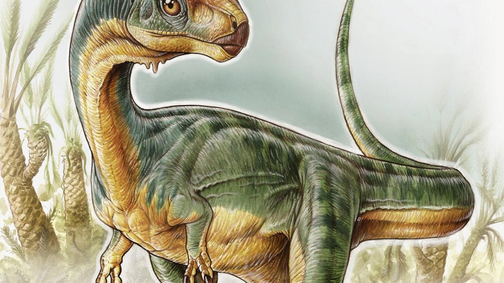

El Dinosaurio Chileno
Chilesaurus
Chilesaurus diegosuarezi es la única especie conocida del género extinto Chilesaurus de dinosaurio que vivió durante el Jurásico Superior, hace 150-146 millones de años en lo que es hoy Sudamérica.
Sus fósiles fueron descubiertos en la región de Aysén, en Chile. Al momento de su descripción, se le consideró uno de los escasos terópodos herbívoros conocidos por fuera de los celurosaurios.
Tiene una inusual combinación de rasgos de terópodos, ornitisquios, y sauropodomorfos, por lo que este género tiene importantes implicaciones para el entendimiento de la evolución de los dinosaurios, tales como la división tradicional entre saurisquios-ornitisquios o como apoyo a la propuesta alternativa del grupo Ornithoscelida.
Según los fósiles encontrados en la Formación Toqui, Chilesaurus coexistió con otro terópodo de tamaño pequeño, crocodiliformes basales, y dinosaurios saurópodos tanto diplodócidos como titanosaurianos.

Descubrimiento
Los primeros fósiles de Chilesaurus, una vértebra y una costilla, se descubrieron el 4 de febrero de 2004 en la comuna de Aysén por el —en ese entonces— niño de siete años Diego Suárez, que acompañaba a sus padres, los geólogos Manuel Suárez y Rita de la Cruz. En 2008 se descubrieron nuevos especímenes, pero se creyó que pertenecían a varias especies de dinosaurio diferentes.4 Solo más tarde fue cuando se dieron cuenta de que pertenecían a la misma especie con una extraña combinación de rasgos. En 2015, la especie tipo, Chilesaurus diegosuarezi, fue nombrada y descrita por el paleontólogo argentino Fernando Novas y sus colaboradores. El nombre del género hace
referencia a Chile y el nombre específico honra a Diego Suárez.
El holotipo, SNGM-1935, se encontró en una capa de la Formación Toqui, que data de finales del Titoniense. Se compone de un esqueleto de un individuo juvenil bastante completo y articulado, con el cráneo, pero que carece de los pies y la mayoría de la cola. Se han establecido paratipos con otros cuatro esqueletos parciales (especímenes SNGM-1937, SNGM-1936, SNGM-1938, SNGM-1888) y varios huesos individuales (especímenes SNGM-1889, SNGM-1895, SNGM-1901 SNGM-1894, SNGM-1898, SNGM-1900 y SNGM-1903), que representan individuos juveniles y adultos.1En septiembre de 2017 el holotipo fue trasladado desde el Sernageomin, y hoy está alojado en el Museo Nacional de Historia Natural de Chile. Desde noviembre de 2017, estos restos fósiles fueron exhibidos por primera vez al público en la exposición temporal del MNHN «Dinosaurios, más allá de la extinción». En la muestra también se mostró el fósil original de Pelagornis chilensis. Otros fragmentos de uno de los esqueletos fosilizados del Chilesaurus (húmero y falange ungueal del dedo pulgar) se pueden apreciar en la exhibición permanente regional del Museo Regional de Aysén en la ciudad de Coyhaique.